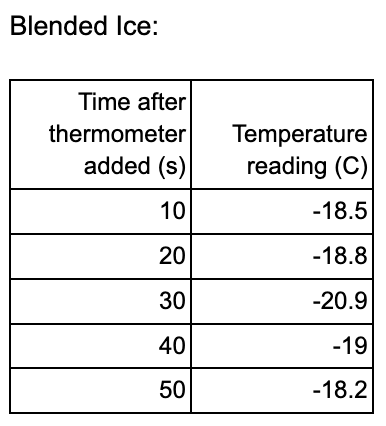
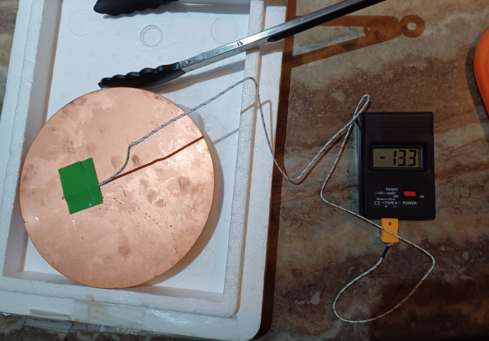
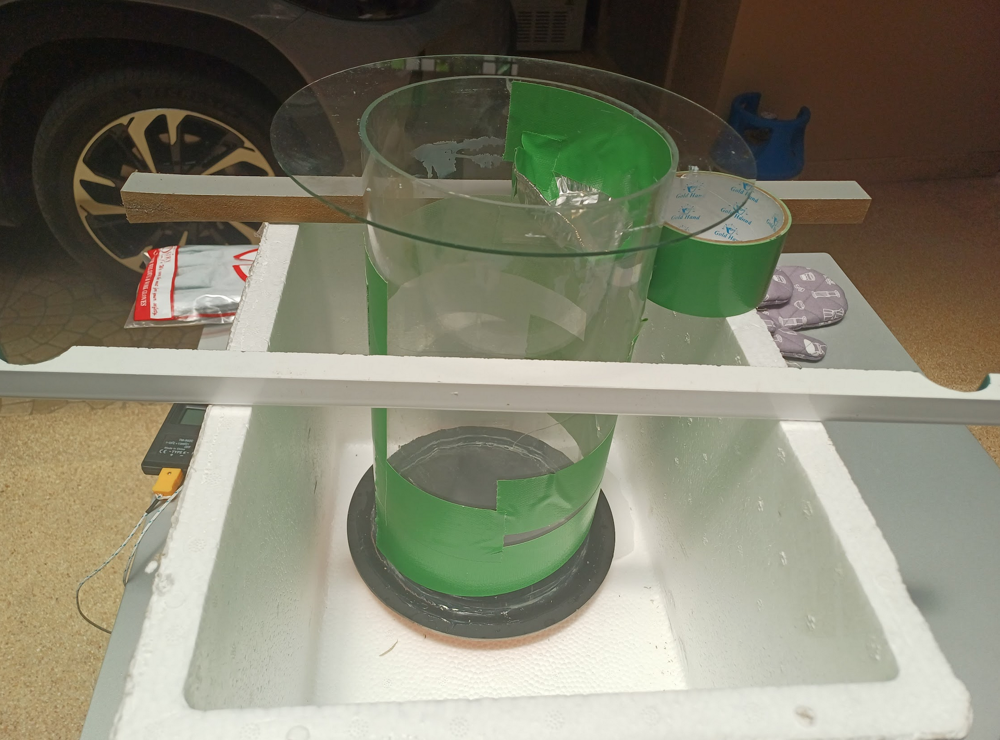
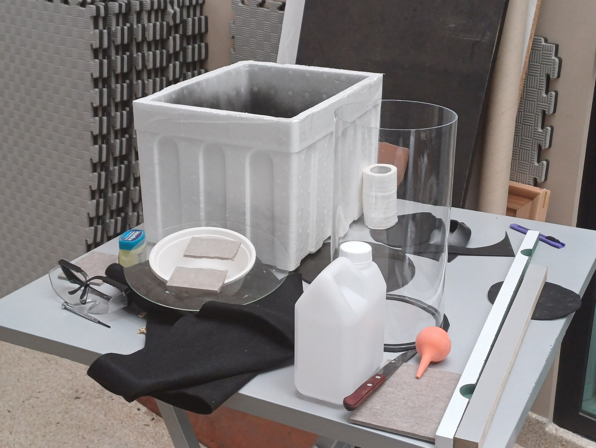

These are the summarized notes of a dry ice cloud chamber I made in the summer of 2025.
Initial research
I started with a plan to make a cloud chamber with a cold heat-conducting base plate, a cooling mechanism for it, and the actual chamber as a tall cylinder on top. For the cooling system, I had to decide between a water ice and salt reaction, dry ice, peltier coolers, or refrigerant and a compressor. I did some small experiments to test some of these methods. My research suggested -20 degrees at the base was enough for a supersaturated vapor, and that dry ice was the most practical way to achieve this. I planned to use the simplest method that could reach these temperatures.

From my logs:
- The salt successfully lowered the temperature to -19.2 with ice chunks and -20.9 for blended ice.
- The blended ice is very close to the minimum of -21.1 degrees, although this did not last long.
- The amount of cooled solution is likely not very high, as the temperature quickly increases and not much salt was used.
Moving on to dry ice, I tested how well it could cool the opposite side of by copper baseplate.

From my logs:
- Copper is an effective thermal conductor and can cool to -50 in 7 to 8 minutes. Likely will cool even better with more insulation, this test had none.
- Strong securings are needed for the plate to stay in place when cooling. Sublimation of the dry ice moves the copper plate around. The dry ice also needs to have more thermal contact
- Condensation may be a problem, as it creates heat and covers the plate with ice
Dry ice cooled well, was easy and cheap to obtain, and did not require working with electronics, so I decided to move forward with it.
First construction
Experiment logs from 23 July 2025

Setup
- Using tongs, I placed a block of dry ice at the bottom of the styrofoam box.
- I then placed the copper plate with the tube on the dry ice
- I placed a rod on the side of the chamber to prevent it from moving, so its bounded by 3 walls of the styrofoam box and the rod
- I placed the glass lid on top and waited for the copper plate and air to cool, measuring with the thermometer until the base plate is -40 degrees.
Filling with alcohol
- I took off the lid and covered it with alcohol using pipette, put the lid back on
- Alcohol on walls caused cracks (see observations)
- I placed the thorium rod inside, leading against the side.
Events
I carried out the experiment as above. Over the course of just over 1 hour, I consistently refilled the alcohol. After 10 minutes, all the alcohol stuck to the lid evaporated, and the vapor I could see subsided. Halfway through I put the thorium rod in, and started seeing tracks. There were none I saw before. I also later put the light at the bottom of the styrofoam box to illuminate the tracks, and used my phone to record. I got around 20 minutes of footage, with several tracks, and I saw some additional ones not recorded. The tracks were quite rare and at random intervals (as expected)
Minimum copper plate temperature: -49ºC
Observations I tried adding the alcohol to the walls, but this created cracks in the acrylic. Perhaps due to the temperature difference? This should be resolved when I have a pool of alcohol instead, but for now I should use the room-temp glass lid only and avoid directly dropping alcohol on the sides. The cracks in the acrylic may also be due to the general temperature difference of the tube. The bottom is in contact with the copper, while the top is warm and exposed to outside air. The vapor lasted for around 10 minutes each time. Refill needed, as it condensed at the bottom or escaped through cracks or gaps. Frost covered the copper plate after a bit, which I think helped insulate it The top was room temp to touch the whole time, so there was a good gradient From halfway down the acrylic tube, the sides had condensation. Tracks Tracks emerged from the bottom third of the thorium rod, this is where it was the most supersaturated probably Tracks were either: Short Long and thin Maybe different types, or just particle direction (straight through layer, coming in from below/above) Also dry ice was still ⅔ solid by the end and could probably last a few more hours.
Second construction
Experiment logs from 16 Aug 2025

Setup
The layers are:
- Styrofoam box, painted black to reduce reflections
- Dry ice
- Copper plate, top painted black with epoxy paint
- Rubber plate, Vaseline in gap
- Acrylic tube, attached with silicone
- Glass lid